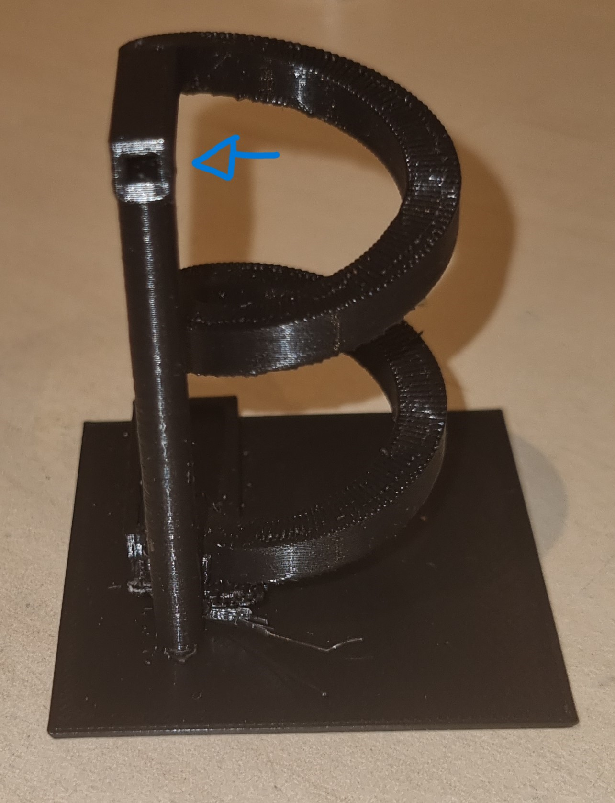

3D Prentun
Lokavara
Hugmynd
Þegar ég var í verklegum tíma VÉL608G var ég að tala við fólk um hugmyndir og þá kom í hugan að prent litla vatnsrennibraut.
Download
Til að gera 3D teikningu notaði ég Fusion-360 og PrusaSlicer. Ég horfði ekki á nein myndibönd fyrir þetta verkefni.
Teiknun
Teikningin var gerð í Fusion 360
Tilraun 1
Í tilraun 1 gerði ég hringlagaða rennibraut þangað til að ég fattaði að það væri ómögulegt
að gera einhvað svona lítið hringlagt með 3D prentun og vonast eftir sléttum hring.

Tilraun 2
Í tilraun 2 gerði ég ferkantaðan coil með annan ferkantaðan coil sem gerir holu í rennibrautinn.
Erfiðasti parturinn í þessu var að hana baðkarið í enda rennibrautinnar þannig að stærðin
myndi breytast með Parametrísktum stærðum. Box=undirplata, thick = 0.5mm og num = 3.
Formúlan (box/4-num*thick*2)/2-rennibraut_radius.

Stillingar í PrusaSlicer
Í stillingum PrusaSlicer var valið Speed: 0.20mm, Filament: GenericPLA og Printer:
Original Prusa i3 MK3S & MK3S+, Supports: Everywhere, Used filament: 16.69g.
Þetta tók um 2klst og 20min.
 Samhvæmt vigtinni er þetta
bara 15g þannig það er mögulegt að prusa var með vitlaust/ónákvæmt gildi.
Samhvæmt vigtinni er þetta
bara 15g þannig það er mögulegt að prusa var með vitlaust/ónákvæmt gildi.

Eins og sést á myndinni var mjög stór partur af prentun set fyrir Support material. Þyngdin er 6.47g sem er um 1/3 af heldar þyngd lokavöru, þetta er frekar mikið af efni til að nota í support og er því ekki mjög vel teiknað. Það tekur 45min sem er líka 1/3 af heildar prentunar tíma.
Prentun
Við prentun tók þetta um 2klst og 20min.
Útlit eftir prentun:
Eins og sérst a myndinni er mikið af support undir rennibrautinni sem er fremar mikið vandamál.
Vandamál
Vandamál 1
Að hafa svona mikið magn að support er ekki bara vandamál útaf nýtni efnis heldur líka að taka supportið af teiknuðum hluti og þar byrjar aðal vandamálið.
Til að byrja að brjóta supportið þurfti ég að nota hníf til að skera
Eftir að reyna við það í smá tíma kom í ljós að ég þurfti einhvað annað til að ná supportinu af og ég áhvað að nota naglaklippur. Við notkun naglaklippa klipti ég endana og reif af supportið. Það tók um klukkutíma að ná þessu af.
Á endanum gat ég ekki tekið ein bita af
Vandamál 2
Seinna vandamálið er að rennibrauts holan er fyllt með support og því er ekki mögulegt að setja einhvað inn í hana og láta það renna niður.
Loka útkoma
Ég myndi segja að endarvaran gékk ekki vel vegna supportinu og holunni í gengum rennibrautina.
| Time | |
|---|---|
| Hugmynd | 2 min |
| Download | 10 min |
| Teiknun | 3 klst |
| Prentun | 2 klst 20min |
| Support Removal | 1 klst |
| Forritun | 6 klst |
| Heildar | 12 klst 35 min |